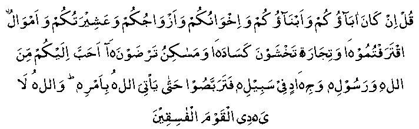

Somebody asked Ali (RA): "How much was the Sahaabah's (RA) love for Nabi (Sallallahu Alayhi Wasallam)."
He replied: "By Allah! To us Nabi (Sallallahu Alayhi Wasallam) was dearer than our money, our children and our mothers, and was more valuable than a drink of cold water at the time of severest thirst."
There is no doubt in Hadhrat Ali's (RA) statement. As a matter of fact, the Sahaabah (RA) reached this state because of the perfection of their Imaan. It had to be so because Allah Ta’ala has written in the Qur-aan-e-Kareem;

"Say! If your fathers and your sons and your brothers and your wives and your tribe and the wealth you have earned and the goods, for which you fear that there will be no sale, and your houses you desire, are dearer to you than Allah and His messenger and striving in His way, then wait till Allah brings His command to pass. Allah guides not the sinful ones." (S9 : V 24).
This verse warns against anything else becoming more attractive than the love of Allah Ta’ala and that of Nabi (Sallallahu Alayhi Wasallam). Anas (RA) and Abu Hurairah (RA) reported that Nabi (Sallallahu Alayhi Wasallam) once said: "None of you can be a Mo'min until his love for me is more than his love for his parents, children and all the people of the world."
Ulama say that the love mentioned in this Hadith and others of its kind is the voluntary love and not natural love. However, if it is taken to mean the natural love, then the word Mo'min will stand for the Imaan of the highest degree, for instance like that of Sahaabah (RA).
Anas (RA) says that he heard Nabi (Sallallahu Alayhi Wasallam) saying, "There are three things which, when found in a person, will cause him to taste the sweetness of real Imaan. These are:
1. When Allah Ta’ala and His Nabi (Sallallahu Alayhi Wasallam) are dearer to him than anything else in this world.
2. When his love for anyone is solely for the pleasure of Allah Ta’ala, and
3. When turning to 'Kufr' is as hateful to him as being flung into the fire."